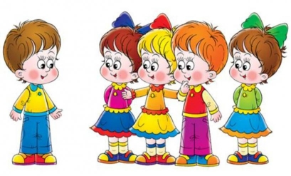

Адаптаційний період
Для малюка дитячий садок — це новий, ще невідомий простір, нове оточення і нові стосунки; потрапивши сюди, дитина змушена до всього пристосовуватися.
Адаптація – це пристосування організму до нової ситуації, а для дитини дитячий садок, поза сумнівом, є новим, ще невідомим простором, із новим оточенням і стосунками. Адаптація (з лат. «пристосування») – процес призвичаєння організму, що відбувається на різних рівнях: фізіологічному, соціальному, психологічному. Адаптація – активне засвоєння прийнятих у суспільстві норм і оволодіння відповідними формами спілкування й діяльності.
Перший тиждень перебування дитини в садочку проходить дуже емоційно, тому дорослим, тим, хто оточує дитину вдома та у дитсадку, потрібно запастися терпінням. Найчастіше у такій ситуації батькам здається, що поведінка дитини раптово міняється — малюк стає вередливим, вечорами можуть бути несподівані істерики із приводу і безпідставні, скандали, що супроводжуються криком, плачем, киданням предметів і качанням на підлозі. Деякі батьки можуть хвилюватися, побачивши таку різку зміну в поведінці дитини, і звину¬вачувати в цьому дошкільний заклад. Але причини в тому, що адаптація малюка до дитсадка — це великий стрес для дитини, її нерви напружені, тому потрібна розрядка. Крім того, в оточенні сторонніх дитина часто стримує негативні емоції, тому виливаються вони у присутності батьків лише ввечері вдома.
Чи у всіх дітей однакова поведінка при вступі в садок? Ні. Одні діти впевнені, вибирають гру, йдуть на контакт із дітьми й дорослими, інші – менш упевнені, більше спостерігають, деякі – виявляють негативізм, небажання йти в групу, відхиляють усі пропозиції, бояться відійти від батьків, голосно плачуть.
Причини такої поведінки різні: це і відсутність режиму вдома, й невміння гратися, й не сформованість навичок самообслуговування. Однак основна причина – недостатній досвід спілкування з однолітками та дорослими.
Окрім того, спілкування зі значно більшою кількістю людей, ніж раніше, може призвести до того, що малюк почне частіше хворіти. Це тимчасове явище, але деякий час воно не даватиме увійти у нормальний робочим режим.
Процес пристосування (адаптації) до дитячого садка проходить індивідуально. Середній строк адаптації дітей триває від 7 днів до двох місяців.
Ступені адаптації
Фахівці розрізняють такі ступені адаптації:
- Легкий – поведінка дитини нормалізується (протягом 10 – 15 днів) – фізіологічна, природна адаптація;
- Cередній (протягом 15 – 30 днів) – дитина худне, хворіє, але не важко, без ускладнень;
- Важкий (триває від 2 місяців і більше) – патологічна адаптація.
Виходячи з цього, виокремлюють три групи дітей за характером пристосування до нових умов життя:
- Перша група – ті, для кого процес адаптації легкий і безболісний.
Такі діти комунікабельні, самостійні, спілкування батьків із ними доброзичливе; - Друга група – малюки, котрі адаптуються повільніше і важче.
Поведінка нестала. Зацікавлення грою змінюється байдужістю, вередуванням. Малятам бракує довіри у ставленні до вихователів, інших дітей навички гри та спілкування розвинені недостатньо. Діти малоініціативні, менш самостійні, дещо можуть робити самі але здебільшого залежать від дорослого. З боку батьків простежується нестабільність у спілкуванні: доброзичливі, привітні звертання змінюються криком, погрозами або збільшенням вимог; - Третя група – діти, які важко пристосовуються до нового оточення.
Вони зазвичай несамостійні, швидко втомлюються, ігрові навички не сформовані. У досвіді таких дітей – прояви авторитарності, жорстокості (чи навпаки – зайвої поступливості) з боку дорослих, що спричиняє страх, недовіру до вихователя або повне ігнорування його та інших дітей. Сон і апетит погані або зовсім відсутні. Діти часто хворіють, що ще більше вповільнює звикання до нового оточення й до нових вимог.